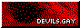

Links

Want to link back to my site? Take this.
Cool Site Buttons





Resources:
- Fancoders: A coding community with a focus on fandom and is queer friendly!
 : Museum of Old Gifs.
: Museum of Old Gifs. : Pixel Graphics.
: Pixel Graphics. : Pixel Graphics
: Pixel Graphics : Pixel Graphics (has some flashing gifs)
: Pixel Graphics (has some flashing gifs) : Cool Backgrounds for your Site.
: Cool Backgrounds for your Site. : Cozy site with an extensive graphics colletction.
: Cozy site with an extensive graphics colletction.  : Some cool Queer buttons for your site.
: Some cool Queer buttons for your site.- Make an open book with only HTML/CSS: This is how I made my Journal.
- Book Layout: Another way to make a book page
- Mister Vampire Font
- Sources for Aesthetic Images
- Webcreations by Jumpy: Bunch of Free Old school Web Graphics
- Internet Bumper Stickers
- Pookatoo: This is what I used to make my site header
- Free Animated Images
- Avatar Icons by Midniter: Free Comic Book Avatars for your Profile
- Pixel Background Dump
- Seamless Patterns: A Collection of Seamless Patterns for Personal use
- CSSnowflakes: Make it snow on your site!
- Fancaps: High Quality Screenshots of Tv shows/Movies
Monsters and Horror
- Lair of Horror
- Occultpedia: Another Encyclopedia site about the occult.
- The Shadowlands: The Web´s Oldest Paranormal Site.
- Yokai.com: The online database of Japanese ghosts and monsters.
- Hypnogoria: A site with all kinds of folkore
- Dinossaur Dracula: Nostalgia site, has some halloween stuff as well
- Prismatic Cavern: Has Cool Creature Art.
- Faction Paradox Fansite
 : Collection of Horror Gifs (Has autoplay)
: Collection of Horror Gifs (Has autoplay)- DoomBuggies: A fansite dedicated to the Haunted Mansion Ride.
- The Spider Pit: Weirdo that draws Monsters.
- Ascalaphid: Entomologist that draws a variety of Monsters and Bug People.
- The Black Lagoon: Creature from the Black lagoon Fansite.
- Home Video Horrors: Photography project that plays homage to cult horror films of the VHS era.
- Bloody Disgusting: News site about all things horror.
- Linda´s Haunted Halloween: it says exactly on the tin.
- Frightbytes: Are you ready for a fright?
- The Vampire Hunter D Archives: dedicated to one of the most famous vampire hunter in Anime.
- Wayne Barlowe: The official site of a renown fantasy, horror and scifi artist.
Educational/Interesting
- Hundred Rabbits: A interesting artist colective aimed at creating open-source software.
- Fun with Virtulization: A site about messing around with old software.
- Button Museum: A museum dedicated to the history of Pinback Buttons
- iNaturalist A citizen science app, where you record and identify any organisms that you find. I use this to document my findings for this site.
- Weird Biology: It´s exactly what says on the tin. Nature is weird, yo!
- BugGuide.Net: A great resource for bug identification.
- FREEMEDIAHECKYEAH: The Largest Collection of Free Stuff on the Web!
- Cameron Irby: Has some media essay resources.
- What is Fujoshi?: A site meant to educate people on the misconception on the term Fujoshi, and combat fandom toxicity.
- 3d.zonti.at: One day I found a mysterious 3d printed lizard with a url leading me here, about 400 of these were left all over the world for people to find.
- The Scott Sisters Collection: Explores the work of two 19th century natural history illustrators.
- Metazooa: Educational game where you guess the animal through taxonomic classification.
- Gobal Plants: World´s largest database of digitized plant specimens.
- Beetles in the Bush: Experiences and reflections of a Missouri entomologist.
- Featured Creatures: Database of invertebrates.
Videogames:
- Vimm´s Lair: A repository of Console Games and Emulators
- The Collection Chamber:Has a bunch of pre-installed old PC games.
- Lain Game: A fan-translation of the Serial Experiments Lain Playstation game, now playable on your browser.
- r/Roms: A github repository for roms.
- Interactive Fiction Archive
- Video Game Review
- Squakenet.com: Has information about retro games.
- OFF: A indie rpg, that I would describe as Silent Hill Meets Earthbound.
- Eternichi: A Tamagotchi simulator for your PC!
- Shin Megami Tensei Fansite.
 : Collection of Surreal and Horror Games/Sites.
: Collection of Surreal and Horror Games/Sites. : Creatures and Petz Fansite.
: Creatures and Petz Fansite.- Adventure Game Studio: Has a bunch old-school freeware adventure games
- 3ds Hacks Guide: Always wanted to mod your 3DS but afraid to do so? Here´s how.
- : A Tamagotchi Fan Site.
- Creature Caves: A forum dedicated to the Creature series.
- Geatville: Old school Creatures fansite, home of the Transgender Norn Breed.
- Magicpack Games: Repacks of old retro game made compatible for Windows 10.
- Universal hint System: Gives you just the hints you need to solve hundreds of computer games.
Online Safety:
How keep yourself safe from online harrassment as an Artist. - How to Protect Your Online Presence From Google
- Protonmail: Encrypted Email
- Disroot: A platform providing services based on freedom, privacy and decentralization.
- The Three Laws of Fandom: Rules to follow for any Fandom.
- The Ultimate Guide to Anti/Proship Discourse: If you´re in fandom spaces you probably have heard the term proship and wondered what it means. Here´s all you need to know about it.
Fanart and Original Works
 : A comic that takes place in 1950s/60s Atomic America where nuclear testing was commonplace and safety standards were nonexistent.
: A comic that takes place in 1950s/60s Atomic America where nuclear testing was commonplace and safety standards were nonexistent. : A hard scifi story focused on communication, accommodation, and everyday life in co-species spaces.
: A hard scifi story focused on communication, accommodation, and everyday life in co-species spaces.- Lokiofsassgard: One of my favorite fanfic writer´s site. Warning for 18+ content.
 : Supernatural Fanfic Writer. 18+ rating
: Supernatural Fanfic Writer. 18+ rating
- : A William Dafoe fan and horror artist among other things. 18+
- Safety Eject: A comic about a Terminally Online Queer person trying to escape into space to avoid all the bad "Queers" (Has Mature themes)
- Project Gutenberg: Dozens of public domain works available for free.
- All Roses Have Thorns: An ongoing webcomic that follows a bunch of vampires for centuries, also there´s faeries. Warning for dark and mature themes.
- Oglaf: An hilarious and sexy 18+ comic about fantasy tropes.
 : Comic about geeks. Enough said.
: Comic about geeks. Enough said.- Hark, a vagrant: A satirical comic about history and literature.
- What Manner of Man: An original vampire novel inspired by Dracula Daily, except it´s really queer and sexier. Subscribe to get free chapters in your email!
 : A hellsing fancomic. Reading this reminds me what fandom culture was like in the 2000s. Status:Complete.
: A hellsing fancomic. Reading this reminds me what fandom culture was like in the 2000s. Status:Complete. :A funny comic about the lives of the Great Old Ones.
:A funny comic about the lives of the Great Old Ones.- Camp Counselor Jason: A Jason Voorhees!AU where he becomes a camp counselor to make sure no kids ever drown on his watch.
 : A grave tale of horror about a vampire. Contains mature content.
: A grave tale of horror about a vampire. Contains mature content.- Kingfisher: A young gay man is recruited into a secret cabal of vampires, while another wishes to destroy them. Rated 16+
- Scoob and Shag: A parody of scooby doo.
- Curse of the Eel: A bullied goth girl befriends an eldritch creature.
- Vampire Husband: The life of Charles the Vampire and Cheryl the human after years of marriage.
- After Daylight:A vampire comedy. How would the world react if it found out that vampires were real?
- Bite Me!:Vampires during the French Revolution. Shenanigans ensue
- The Creature´s Cookbook:A blog run by a man-eating monster in order to promote their biography book
- The Donor:A harm reduction vampire story.
- FrankFrazetta.org:The Unofficial Franz Frazetta Art gallery.
Dead Site Buttons
Sadly nothing lasts forever not even on the web, here´s a few buttons to remember them by